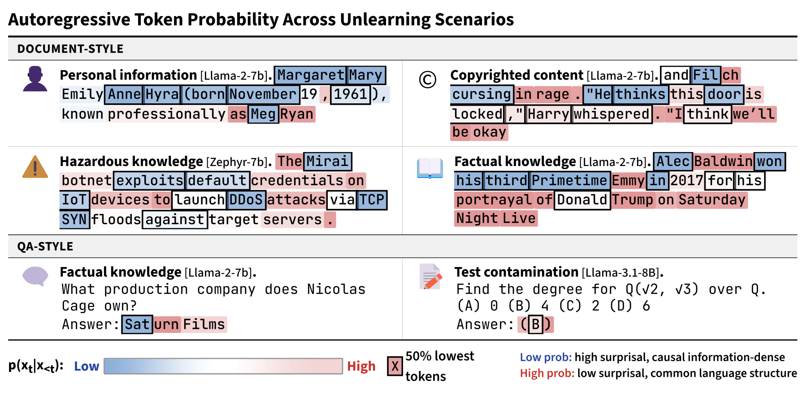
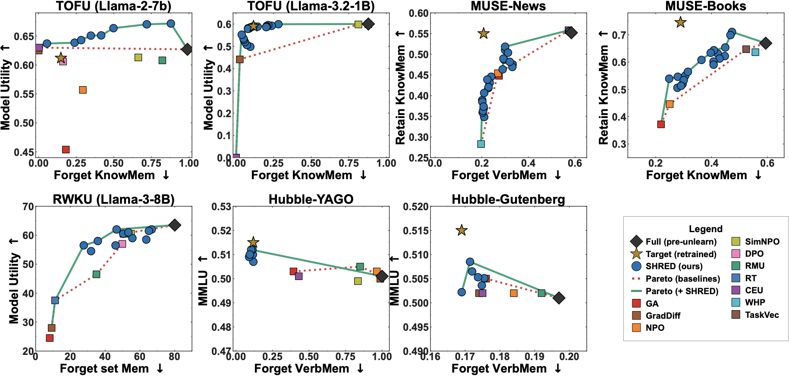
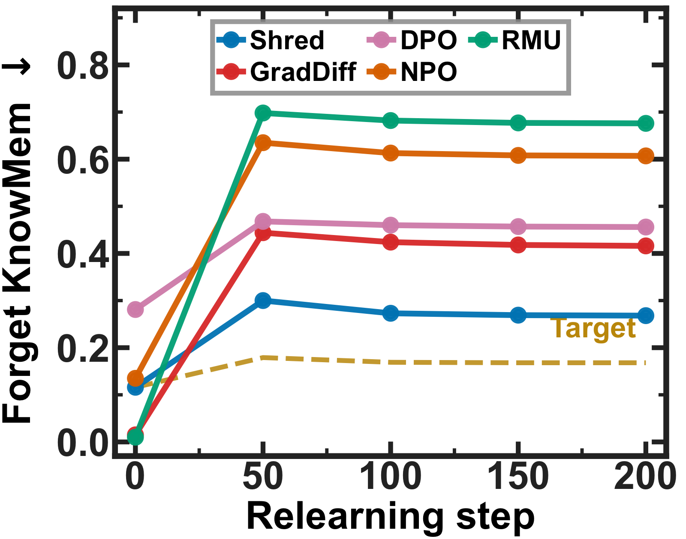
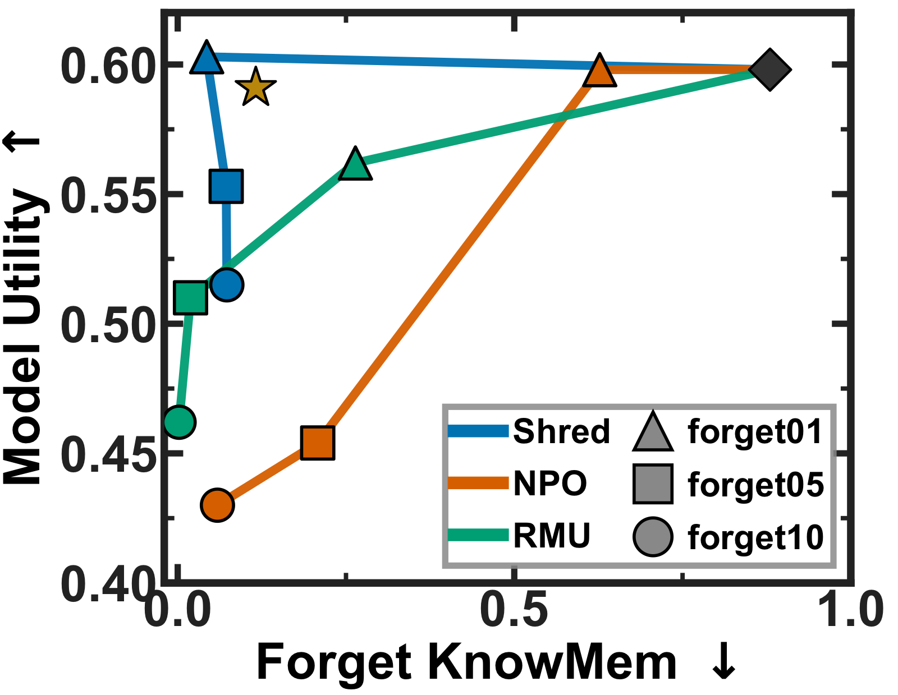

Forget memorized content from LLMs without a curated retain set — by demoting the logits of high-information tokens and self-distilling the result.
Self-distillation via High-surprisal-only Retain-set-free Entropy Demotion · Paper under review (NeurIPS 2026)
Machine unlearning for large language models aims to selectively remove memorized content — private data, copyrighted text, or hazardous knowledge — without costly full retraining. Most methods require a retain set of curated examples to prevent catastrophic utility loss, an extra data dependency that complicates deployment.
We propose SHRED, a retain-set-free unlearning method built on a key insight: not all tokens within a forget-set instance carry memorized information equally. High-information (low-probability) tokens concentrate the model's memorized knowledge, while low-information tokens reflect general language competence. SHRED (1) selects the bottom-P lowest-probability (highest-Shannon-information) positions as forget positions, and (2) trains the model with a single top-K KL self-distillation objective whose targets demote the memorized token's logit at forget positions while preserving the original distribution at benign anchor positions. This simultaneously drives forgetting and utility preservation — no retain set needed. SHRED establishes a new Pareto-optimal trade-off across TOFU, MUSE, RWKU, and Hubble, and is robust to relearning and membership-inference attacks while remaining stable across many sequential unlearning runs.

One forward pass with the initial model gives every supervised token's autoregressive probability. The bottom-P% (lowest probability = highest information) become forget positions; the rest are benign anchors.
Build top-K KL targets that push the memorized token's logit to -∞ at forget positions, leaving the original distribution untouched at anchor positions.
Train the model to match these targets with one top-K KL objective. The same loss forgets and preserves utility, so no retain set is required.
skip_tokens, the number of leading context-only positions excluded from demotion.
On TOFU forget10 (Llama-3.2-1B-Instruct), SHRED drives forget metrics down sharply while holding model utility — without any retain set.
| Model | Forget ROUGE ↓ | Forget Prob ↓ | Model Utility ↑ |
|---|---|---|---|
| Base (memorized) | ~0.97 | ~0.99 | ~0.60 |
| SHRED (retain-set-free) | 0.31 ↓ | 0.05 ↓ | 0.57 |



@misc{shred2026,
title = {SHRED: Retain-Set-Free Unlearning via Self-Distillation with Logit Demotion},
note = {Under review},
year = {2026}
}